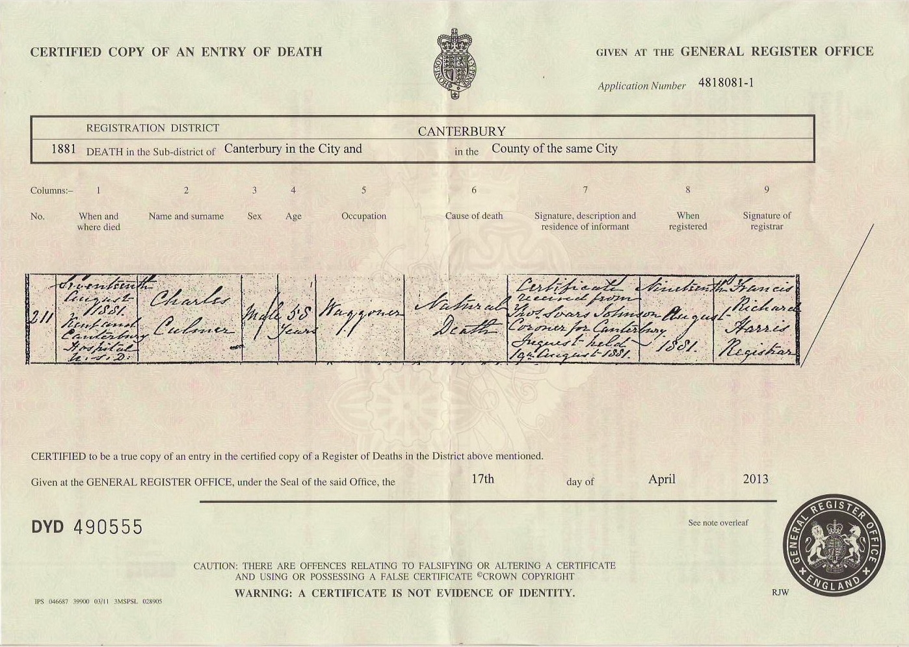

Charles Culmer c1822 - 1881
[ Home ] | [ Calendar ] | [ Surnames Index ] | [ Errors ] | [ Family History ]A farm waggoner and the child of John Culmer (an agricultural labourer) and Phoebe Port, Charles Culmer, the great-great-grandfather of Nigel Horne, was born in Hoath, Kent, England c. 18221,2,3,4,5,6, was baptised there on 29 Dec 1822 and married Charlotte Coleman (a pauper with whom he had 9 children: Ann, Henry, Charles, Elizabeth, Emma, John, George, Jane and Frances, along with 5 surviving children) in St Nicholas-at-Wade, Kent, England on 21 May 18507 (St. Nicholas At Wade, Kent, England).
During his life, he was living in St Nicholas-at-Wade in 18411; at Row, Monkton, Kent on 30 Mar 18519; on Monkton Street, Monkton, Kent on 7 Apr 18613; and at The Street in St Nicholas-at-Wade on 2 Apr 18718 and on 3 Apr 18815.
He died on 17 Aug 1881 on Kent and Canterbury Hospital, Ethelbert Road, Canterbury, Kent6 (pleurisy) (pleurisy) and was buried in St Nicholas-at-Wade on 21 Aug 1881.
Parents
- John was born c. 1804
- Phoebe was born c. 1797
Children
- Henry was born c. Nov 1851
- Charles was born on 5 Dec 1852
- Emma was born on 15 Nov 1860
- George was born c. May 1863
Citations
- 1841 England Census Online publication - Provo, UT, USA: The Generations Network, Inc., 2006.Original data - Census Returns of England and Wales, 1841. Kew, Surrey, England: The National Archives of the UK (TNA): Public Record Office (PRO), 1841. Data imaged from the National
- 1851 England Census Online publication - Provo, UT, USA: The Generations Network, Inc., 2005.Original data - Census Returns of England and Wales, 1851. Kew, Surrey, England: The National Archives of the UK (TNA): Public Record Office (PRO), 1851. Data imaged from the National
- 1861 England Census Online publication - Provo, UT, USA: The Generations Network, Inc., 2005.Original data - Census Returns of England and Wales, 1861. Kew, Surrey, England: The National Archives of the UK (TNA): Public Record Office (PRO), 1861. Data imaged from the National
- 1871 England Census Online publication - Provo, UT, USA: The Generations Network, Inc., 2004.Original data - Census Returns of England and Wales, 1871. Kew, Surrey, England: The National Archives of the UK (TNA): Public Record Office (PRO), 1871. Data imaged from the National
- 1881 England Census Online publication - Provo, UT, USA: The Generations Network, Inc., 2004. 1881 British Isles Census Index provided by The Church of Jesus Christ of Latter-day Saints © Copyright 1999 Intellectual Reserve, Inc. All rights reserved. All use is subject to the
- England & Wales, FreeBMD Death Index: 1837-1915 Online publication - Provo, UT, USA: The Generations Network, Inc., 2006.Original data - General Register Office. England and Wales Civil Registration Indexes. London, England: General Register Office. © Crown copyright. Published by permission of the Cont
- England & Wales, FreeBMD Marriage Index: 1837-1915 Online publication - Provo, UT, USA: The Generations Network, Inc., 2006.Original data - General Register Office. England and Wales Civil Registration Indexes. London, England: General Register Office. © Crown copyright. Published by permission of the Cont
- 1871 England, Wales & Scotland Census - Findmypast (was age 48 and the head of the household)
- 1851 England, Wales & Scotland Census - Findmypast (was age 28 and the head of the household)
Notes
worldconnect.rootsweb.com.
Media
Charles Culmer - Charlotte Coleman - marriage certificate

Charles Culmer - death certificate

Whitstable Times and Herne Bay Herald - 27 Aug 1881

Canterbury Marriages - GBPRS/CANT/M/97245491/1
England & Wales marriages 1837-2008 - BMD/M/1850/2/AJ/000450/034
England & Wales deaths 1837-2007 - BMD/D/1881/3/AZ/000069/330
1871 England, Wales & Scotland Census - GBC/1871/0014272132
1851 England, Wales & Scotland Census - GBC/1851/0005872969
Family Tree

Map
Generated by ged2site. Last updated on Jul 3, 2024
Known Issues
Burial date (21 Aug 1881) has no citations
worldconnect.rootsweb.com in notes is not found
worldconnect.rootsweb.com in notes is not found